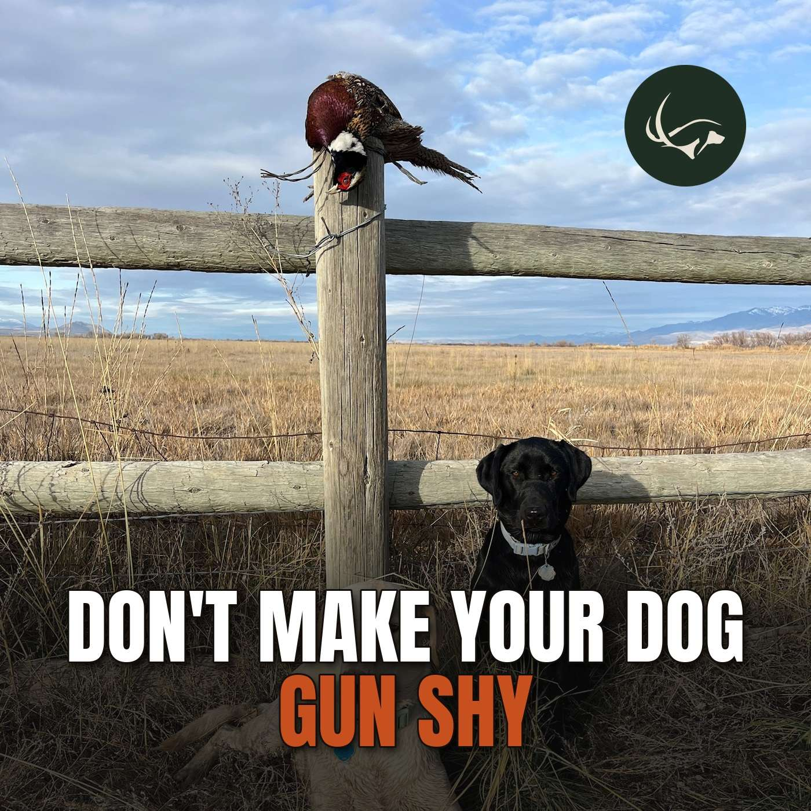

Episode 65 · October 13, 2026 · 32:38
Don't Make Your Dog Gun Shy: How to Introduce Gunfire the Right Way

About This Episode
Questions about the training topics in this episode? Tyce works with bird dog owners and hunters through Utah Bird Dog Training. Reach out to work with him directly.
Resources & Links
- The Gunshy Fix — Sound conditioning program for gunshy dogs.
- Kuranda Dog Beds — Elevated, chew-proof dog beds built for working dogs.
- Gunner — Crash-tested kennels, bumpers, and gear for working dogs.
- NuVet — Cold-pressed supplements for optimal dog health.
- All American Canine — Made-in-the-USA treats and supplements for working dogs. Promo code: UTAHBIRDDOG.
- Paradigm Sporting Dog — Veterinarian-designed first aid kits for bird dogs.
- Utah Bird Dog Training — Tyce's professional training services.
- Field Bred Golden Retrievers — Tyce and Rachel's golden retriever breeding program.
- Utah Pointing Labs — Tyce's pointing lab breeding program.
Transcript
Full transcript for Episode 65: Don't Make Your Dog Gun Shy: How to Introduce Gunfire the Right Way.
Tyce
Hey guys, welcome to the Bird Dogs and Big Game podcast, you know, it's going to take me a minute to get used to that with the name change, the Bird Dogs and Big Game podcast, but I'm looking forward to talking with you guys today about the topic and I hope it can- help you guys out. So, hey, I want to start off, I want to thank some of our sponsors or people that are helping us out. First of all, I want to thank All American Canine and talk to you guys about their products. Right now, I actually have a Golden Retriever, man, it's the end of the day here and my brain's warming up, but I have a Golden Retriever and her name is Covey and she has just had a hard time, I've had a hard time keeping weight on this dog. So she's just a lean machine and so I wanted to put the weight gainer, try out the weight gainer on her and she is putting weight on, man. So there's a lot of protein in that so it's a good product if you have a dog that's struggling to put weight on go ahead and give it a try and I think you'll be happy with it this time of year, if you're a waterfowl guy I like my dogs a little heavier like five pounds on the heavy side especially I hunt a lot of I like to all the way through the season and it gets really cold and I've just noticed if. You have a little fat layer on your dog they're they're gonna get through that, be okay in the cold a little bit better compared to a dog that's really lean. And we see that in human beings. If you're a little thicker person, man, you might be out there in a light jacket. And if you're skinny, you're gonna have like four or five layers on. So I mean, it's just common sense, right? A little extra insulation is gonna keep you warmer. So the same thing with the dogs. Now, if you're an upland guy and you only hunt upland, Yeah, keep your dog on that lean, lean side. There's no need to carry around that extra weight and and I think you're gonna have a good time. So check out our other sponsors in the show notes. If you're looking for a great cot, check out Kuranda dog beds. I just ordered some new korunda.com for their kennel cots. I just ordered like five more of their anodized aluminum. I'm gonna put them in my personal dog crates where we have of clients drop dogs off commonly. I'm gonna pull, I've been putting pine shavings in there. We're gonna pull those out and put those cots in there. So it'll be nice, especially our dogs with curly coats and the shavings and stuff tend to kind of get attached to those, we'll just put those cots in there and that'll keep them nice and they're not gonna get those shavings in their coats. So check them out, check out NuVet if you're looking for some good joint product. They make some good joint product and some shampoos and stuff like that, you can use on your dog. So all these products, they're good ones. We like, we've used, and go ahead and give them a whirl. I also want to put a little shout out for a company we're hoping to team up with, but it's Haas Straps. I don't know if you guys have seen them online. This is one of their, if you're a watching this video, this is one of their collars. There's just one of their collars.
So they make these sweet replacement straps or just four E collars. And also you can use them obviously to either collar, but they're really cool material where they're not going to delaminate. That's the one thing I don't like about the Garmin. We run Garmin Pro 550 or Garmin collars in general, you know, the TT25, the Pro 550 plus most of the time we're running the Garmin Pro 550. But over time we're getting those dogs in the water a lot and these, the collars will delaminate. So they'll kind of start separating and expanding and eventually you got to replace them and they just don't, they just don't slide as good and everything like that. So these HOSS Straps, they just sent some of these out to us to re-try and man, it's going to be hard to go back to a regular collar. So they have a really cool and kind of see a buckle here and it just pulled out of here.
In place. So it's just, and then to get it off your dog, you just try and slide it off and then you can just slide it in, click, click, click, R and you're right back on play with your dog. So as long as your dog doesn't eat your collar somehow and get it off, which I don't know how your dog would get this off it, maybe if you have it with another dog, the dog could potentially chew this off dog. That'd be a bad deal because, you know, they're not cheap. There's a lot, I'm sure that goes into these, these are aluminum., This is an aluminum buckle. So it's a camera the word they use for but it's like our aircraft aluminum is this that's what it is Is this aluminum buckle? That's my favorite They make this one. It's a Paul plastic buckle. I've yet to have one break or anything So I have nothing really negative to say about it. This one just feels beefier and More solid. So I think either one of them would work But if you're looking to I upgrade your, your, your straps or get a new just collar in general These are pretty sweet. You can pull this D-ring out and move it really easily. And then it just snaps up into the hole there. So you can move that around as needed. So they're kind of adjustable and use these as straps to hold the equipment. You have some attachments you can hook to the wall and strap your, I don't know, whatever you want to put through there and decoys or any, I don't know, there's all sorts of options. You can get on their website and check them out. HOSS Straps, check them out. They're a cool company that just want to say thank you for sending us some of your callers and we're gonna be in touch. So anyhow, and then go ahead and follow us on social media, really appreciate you guys sharing our podcast, the kind words, you know, I'm just a hunter like you guys that I've done a lot of hunting ever since I was a little kid. And so with this podcast, I'm just sharing some information with you guys. Obviously I train dogs for a living. I've found things that work good for me. And there's a lot of ways. To train a dog, you know, honestly, there's not necessarily my way is the only way out there. I've just found what works for me and what works for my client dogs and then put it to the test and been doing it for 20 years and just had good consistency taking my dogs through and turning them into a nice hunting dog. So, and we also run hunt tests. I run HRC, AKC hunt tests all the way, you know, to the highest levels there. I've never gotten to the field trial game. I just, my love and passion is chasing these things, pointing on my wall behind me as birds. So, pheasants, upling game of all species and just really looking forward to that. Also this next summer in July, we're looking to potentially do a hosted hunt to Argentina. We did a podcast with the gentlemen where I had a client go down there and had an amazing experience. I shot tons of different species down there that we don't have here in the States. They shot a ton of cinnamon till and so a lot of people that's high on their list is to get some of those cool species. So if you are interested in going hunting with me to Argentina. Send us a DM. Send us an email. You can send us an email to office at utahbirddogtraining.com or message us on Instagram. We're gonna go down and do some hunting in Argentina and guaranteed to have, well, guaranteed. I guess it's up to you with your good attitude. But from what I gather and for people that have gone down on this hunt, it was amazing. Tons of birds, tons of cool new species, and just why we love to travel to new places and go hunting there. Also we're looking at potentially doing a red stag hunt. So if you're looking to hunt red stag and you're interested in going down there with me to Argentina, I would love to get one at the bow and arrow. I've gone to New Zealand and hunted red stag and shot them with a rifle. And these are all free range. The ranch is about 70,000 acres, but it's all private ground, free range, wild red stag. These aren't going to be your high fence to state stag like you're going to kill in New Zealand where they do tend to have bigger antlers. Now, a nice wild red stag is going to be kind of like a branch antlered bull elk. So if you get the triple crown or the quadruple crown, that's a really big free range stag. You just get a nice set of antlers, that's going to be a nice one. But if you're interested. Let me know and I can get you the cost on that and we're looking to put together a group to go down to Argentina and hot red stag also during the rut. So during the roar down there. So that'd be really cool to go to Argentina. You can get your red stag back to the States. No problem with waterfowl. Argentina does not allow importing currently with waterfowl, unfortunately. So, I'd love to have some of them on the wall, but it's just going to be more an experience and taking some of those beautiful species of birds down there in Argentina.
And so common sense your dog has to be okay with gunfire to be a hunting dog. But if your dog is not okay with gunfire, you do not have a hunting dog. All you have is a pet. So that's really important. The difference between a hunting dog and a pet, there's two things to it, gunfire and a desire for birds. So the prey drive has to be there and the dog has to be okay with gunfire. So, that being said, a very common thing that we run into is people, very commonly when I'm up at the Western Hunting Expo, again, we're gonna have a booth there this year, so come check us out, come say hi, come talk dogs and come get some swag. But I have people come up all the time. I have a dog, she's awesome, she loves birds, She loves retrieving, but as soon as a gunshot goes off, she's done. And so they're basically biding their time is just having this animal as a pet until it passes away and then they're like and then I'm going to get another one and I'm going to work this dog, and start over. You know, but a dog is gun shy because the owner has caused it to be gun shy, right? So now there are personalities that lean that way that you gotta be more careful with guns and there can be gun, some dogs don't care about gunfire. And what I see commonly is people get a dog, they get really excited and they're like, , what if my dog, how it would respond to gunfire? So they'll go out and they'll take it hunting. They'll just take it out, let's go pheasant hunting. And they just take it out and bang, bang, bang, bang. And the dogs like, whoa, what was that? And then they kind of settle in and they're okay with gunfire. Well, there's some people, bang, bang, bang. And the dog is ruined. The dog runs back to the truck, stops hunting, changes its whole demeanor. And the dog is, is gun shy now at that point. And some dogs, it's easier to get through, to gun shy issues than others and we, and we'll get to that and some, they can be literally ruined for the rest of their life. And anytime they see a gun, they hear a gun, they're done. They're gonna run, hide in another room. They're gonna run to the truck. They, they're gonna do something that they wanna get away from that gunfire. So it's just honestly, it's kind of a sad state. It's sad to see a dog that, you know, should potentially love gunfire and love birds and hunting that's absolutely afraid of it. So we're gonna talk about how we introduce a dog to gunfire. And I wanna express in this podcast, do not get this one, do all you can to get this one right with your dog. So the first thing we wanna do is get that dog really excited about something, okay? So it doesn't even have to be a bird. It could be a ball, it could be a bumper, or something that's just positive, okay? So we wanna get that dog first, excited about whatever. And most of the time, the thing that gets a dog really excited is a live bird or a dead bird. So if you get your hand on a dead pheasant, dead chukar, dead duck, whatever it may be,
And then ideally you've started that dog as a puppy, introducing that dog to birds. They dangle around or dangle the bird around on a string over the puppy when he's in his whelping box, the breeder has. And then right when you get the dog home, you start letting the dog chase a bird on a, you know, a string and the dog's kind of chasing around and biting at it. And then maybe you throw some simple retrieves. Always end with the dog, wanting more. You want that dog to just love that object, but not get bored with it. So keep your training sessions short, especially when it's a puppy, keep that dog wanting more and build that prey drive in that dog, right? So want to get that dog really excited about birds. So once this dog's really excited about birds,
gets excited about those or doesn't really care, you know, then you got to just keep practicing. I've seen some dogs where you throw a bird out there, the dog runs out to it, kind of sniffs it, leaves it, you run out there, grab the bird, tease them with it, give them some thumb bumpers, we call it, get them excited. You're excited. The dog runs out there, picks it up and thinks, oh, that's kind of fun. And then you do it again, you throw it, and the dog is like, oh, and then those genetics as a predator, hopefully start kicking in and that dog gets. Really excited about, you know, the bird and the smell and the texture in its mouth. And it's just excited about it. Okay. With our client dogs. We typically do is we start them off on live pigeons. So we'll pull, we'll take a, a pigeon, cut the flight feathers out and or pull them out. And then we'll, so the bird can just flutter down in the beginning. We're. Let that dog really smell the bird,
dog in the nose real quick or the beak just kind of hold it so it can just smell its body and then just talk you know positive good dog and we'll usually give him a hunt command like hunt them up is it smelling it like hey hunt them up, hunt them up, hunt them up. That dog's like smelling that bird and it's like oh yeah it's all getting excited. Then we'll actually wing lock the bird, so we'll take the wings we'll bend them over the joints of the elbows. You can actually take the lock the the one wing and you rotate it over and then you rotate one more time those joints And so actually lock those wings, the bird can't fly. So, so those wings can't flutter and it doesn't, it's not like you're not breaking any bones or anything. It's just using the tendons or the joints on the wings to actually lock themselves. If you type up wing lock in Google, I imagine-I imagine there's something out there on that. But we go ahead and lock the wings in. So again, we're not, we're just trying to ease the dog into this, have a positive experience. The dog smelling the bird, it's excited about it. Toss the bird out there, dog runs out there, hopefully it retrieves it. Then we grab the bird and we unlock those wings. Now, now we kind of let the dogs, let the wings flutter in front of the dog. We get the dog excited. We're excited. We're going to throw that bird out there. The bird flutters down. And usually it's like jaws chasing a, you know, a shark chasing a minnow. It's just like birds trying to get away and the predators like, boom, just hits that bird. They grab the bird. They're all excited about it, you know, do two, three retrieves, two, three, four retrieves and end it and tease the dog, like you're gonna throw the bird away. Next dog, next time, next day, next training session, do the same thing. Now the dog knows what it is. It's already excited about it. Do two or three, you know, two to five retrieves, not overdoing it again. Dog's already super excited about that bird. Sweet, do two, three, four days of that. If your dog is like loving it, showing confidence on the bird, now we're ready to introduce gunfire. So at that point, we're going to have someone walk off at a distance far away, you know, and all you want to hear is, barely pop, you know, with the gunshot in the background. We'll take that bird and you can throw the bird out there and actually lots of times the best thing is to have the gunshot out there, have the person shoot a shot and then throw the bird. So gun. Goes off. Maybe hears it barely, and then the dog sees the bird, and then you send the dog to go make the retrieve. It kind of ties it all together. Shot, bird, retrieve, and you can mix them in a little bit. If the dog's real high drive, you can throw it as the bird's up on the arc. Maybe hold the bird back dog just a little bit. The bird's at the arc, gunshot goes off, then you release the dog, go make the retrieve, but we want to tie those things together. Occasionally, if you throw a bird and the bird is at the arc, the bird is at the arc and the gunshot goes off as the dog's on the way to it. It's like, whoa, like what was that? And it may like, because it's excited, it's focused on the bird to shoot the shot and the shot affects it. Where it's like, if you shoot the shot, the bird looks around, or the dog looks around, then you immediately throw the bird. And it's like, oh, there's the bird. And it's almost like they forget about the shot. And then release the dog to go make the retrieve. If your dog's doing really good and showing no issues, you can just start throwing the bird when it's in the air, shoot the shot, and the dog's just gonna go get it. But essentially what we're looking for with a gun-shy dog or introducing a dog to the shot is we're looking for no change in demeanor. We're looking for a dog that's enthusiastically running to the bird and it's excited about it and showing no issues with the gun, right? And over time, we're gonna slowly have our bird boy or our gunner stay in the same position and we're gonna work that dog in, not the bird boy, because we wanna control it. So we're gonna work in towards the gunshot. And the goal is obviously to get to where we can throw
So,
that bird, shoot the shot, release the dog and go make. Rewind a little bit, we have to be really positive. If, if you don't have birds and you have a bumper or a ball and, your dog loves it, you can do the same thing with that. It doesn't really matter what it is. Ultimately, we want our dog, if it's a hunting, hunting dog, we want birds and guns to go together. So that's why we use birds, because that's actually the sport we're playing, right? Is birds shooting birds with guns when you're out hunting, that's our game. And dogs generally love, you know, generally love their predators. So they love birds. And so that's why we use birds, to get them excited about it. So if you start your dog off on the right way, again, birds and slowly bring in the guns, generally you're not gonna have an issue. So occasionally though, if you have a dog, well, let's talk about, personalities. Some dogs are more prone to being gun shy. Dog that's nervous, doesn't have a lot of self confidence. Those are the ones you're going to want to be more careful when you do the introduction. A dog that has a lot of self confidence, like the world's as oyster, he just runs around everyone kind of does whatever you want. That dog is generally going to be genetically less inclined to be gun shy. He just has a lot of confidence. He's really worried about things. If you have a dog that watches people and is nervous about people and those things, but has really good genetic hunting lines, that dog can still be a good hunting dog, but you gotta, just be aware you need to ease them slowlyly through that gun. Introduction process. I don't care if it takes a whole month, you know, do it the right way. Watch your dog. If there's any change, do not get closer. Or if anything, go further away and work that dog until the dog is retrieving, going after birds happily without any issues. We want the dog excited about birds. We're excited about gunfire because ultimately we want those things tied together, right? So when we shoot the shot, the dog looks around for the bird in a positive way. Where's that bird? You know, either an upland dog,an where's the bird that just got shot down or obviously a waterfowl dog where's the, where's the duck that we just shot down? So watch your dog if you feel like your dog is a really confident dog, it's probably gonna go a little quicker. You can probably do a bird and gun introduction and a week and a half. But I would not typically go out there in two or three days, do a bird and gun introduction, because you're gonna be anywhere from three days to a week. Just these are basic guidelines. Three days to a week, getting your dog on live clipping pigeons, if that's going really smooth, your dog's totally amped up, he's excited about them. You know, I would make sure your dog is on a check cord so the dog can't run off with the bird and create habits. You know, and I'm not too worried about, you know, the control of the dog at that point, but I do not want him running off. So I'm going to guide him in the best I can with the check cord once we throw that bird. And we're going to, again, pet-the-dog until the dog hold. We're going to love on the dog. We're not going to immediately remove that bird out of the dog's mouth. And then we're going to go ahead and cover the dog's eyes up, slip the bird out of its mouth so it doesn't see us being the thief of joy and still not bird from it. And we're going to tease him again and throw it out there. And then we're going to coax the dog the best we can. Dogs are pretty much untrained. They may want to run off the bird, keep it for themselves. We're going to just encourage a good hold and to retrieve the best we can. But we're not really too worried about that. We can clean that up in the future of training. So, yeah, just be aware of personalities when it comes to a bird and gun introduction. So if, well, I'm gonna rewind a little bit here. If you have a dog, and I've seen this, you get a dog that they are gun cautious. So you're really patient and you're working with them, and you get within a bubble of 20 or 30 yards, and they are just, they're fine up until that point, butocally once it gets loud enough, and it's affecting their drive towards the retrieve of a bird or going after, after the bird. This is where it's going to take a lot of time. It could take a month. It could take two months. I mean, you've just got to just be patient with the dog. But if you want to speed up the process, we've created a program called gun-shy-fix.com. I'm going to go ahead and put with the plug in there, gunshyfix.com. If you go there, it's basically a a song that's really calming to the dog. And then we slowly introduce gunfire into the soundtrack. And over time, what you do is you get like a turtle box speaker. That's what we like. You're gonna play that song on that speaker dog and when it's just in a calm environment, hanging out in your house, in the truck, whatever it is. And the dog's just like, okay, this is chill. You're just getting uncomfortable with it. Then slowly it's gonna bring in gunfire into that. And the gunshot will go off, bang, really quietly. And you basically, you're gonna play that soundtrack over and over until the dog is just like, I don't really care. And at this point, you're really using a desensitization approach. You're letting the dog's brain relax in just comfortable environments. And that dog's gonna be like, yeah, okay, this isn't a big deal. And then as the dog is like showing no issue or reaction there, you can go out and throw a bumper for the dog, whatever it may be, just play it a ton, right? And once the dog's just acting no big deal, let's go up to the next soundtrack. We're gonna go up to that next one. We're gonna play it just like average level, watch our dog, and we're just looking for no change in demeanor, and you're gonna work your way through the program until the end where there's just gunshots going off and the dog's just happily doesn't care about him, dog's excited about it. As you're just out working the dog, feeding the dog, and it's just comfortable with the situation. And then at that point, then we're gonna go ahead and take the speaker into the field and throw some bumpers or throw some birds while the shot's just going off, the dog's excited about birds. And then slowly, we're gonna retry, introducing gunfire the original way, having a shot in the distance.
Is going off, so you're kind of adding another gunshot and just slowly working in. But hopefully if we've done all that desensitization work, the dog's brain is kind of rewired. It's okay, I'm comfortable with this, and then when we bring back the gunshot the way I talked about introducing the gunfire, the dog is gonna be okay with that. So if you can't get that dog through a normal gun introduction program, like I've talked about, the Gunshy Fix is a really good one to try out on your dog. And it's a good one to try, when they're puppies or put the puppies on and just let them get used to that desensitization approach and just get them comfortable with it as you're feeding them having a good old time. And that's going to help them as they're adults because everything's just positive about gunshots and gunfire and retrieving and all that stuff. So we've had good success with that. Is struggling or is already gun shy. I would definitely recommend that program because dogs that you're bird and gun introduction, if they are already gun shy, it can, some of them, if they have a really high drive,. We can get it through it within, you know, a decent amount of time, but some of them it could take months and months literally to do that. So playing that program, the Gunshy Fix over and over, that's going to just speed up that process. So if you guys get it and work your dog on it, I'd love to hear your feedback on it, had some good success with it, and I hope you guys can do the same. So I think we're gonna go ahead and wrap up the podcast on this. Again, it's not like this crazy topic, but I know it's so common that I hear people, I wouldn't say it's. I wouldn't say it's so, it's not like more common than not, but it is very common that we run into people with gun-shy dogs because they, they just don't know. They're just excited to go out and get, they got their young puppy and they're like, Hey, let's go shoot some shots. Just don't do that. Don't test your dog out and just see if it's okay with gunfire. You can get lucky sometimes again, like I talked about earlier, and your dog kind of absorbs it and he's okay with it. And he kind of, you take him hunting and he just starts tying things together. It's going to be a really rough hunting dog, but it's going to be in the dog and sometimes be okay with that. But I would say most of the times you're really playing in the danger zone when you have a dog that you're just doing it that way. The correct way is again, take it slow, take it easy. Don't mess that one up because if you have a dog that's excited about gunfire, and excited about birds, you have the foundation of a gun dog or a bird dog. If you don't have it, if you're missing one of those, all you have is a pet. So you got to have a dog, again, that's excited about gunfire, excited about birds, and then pretty much the rest of it can be trained because the rest of it's mechanics, the obedience and the retrieval training and the handling or the hunting and pointing training, or the pointing training and all that, but the dogs have to have that drive to go get that object and be okay with gunfire. So thanks for listening everyone to the podcast. I really appreciate you guys. Thanks for your kind words about the podcast and really appreciate you guys taking time out of your day and listening. Hopefully when you do these podcasts, it will help you when you get your next dog or your first dog or your second dog or third dog, you'll go, I need to be a little more careful with that and just give you guys some information that will help you have a better experience with your bird dog because there's nothing better than having an amazing dog and having an awesome hunt and everything just ties together. And you see, and you're so proud of your dog and it's just a fun experience. Just a good part of life is working these amazing animals. So the hunts are underway. Hopefully you guys are getting into the birds and having a good time. We love seeing people out there with their dogs, especially that we trained or even in your dogs, share those with us, we love seeing them, throw them up on our social media and good luck hunting. And again, remember, train for the hunts. Think about how you hunt and train your dog for your hunt style and for the hunt. So we'll see you in the next podcast everyone.
About the Host
Tyce Erickson
Tyce Erickson is a professional bird dog trainer and the owner of Utah Bird Dog Training in Utah. For nearly two decades he has worked with pointing dogs, retrievers, and family hunting dogs, helping owners build dogs that are capable and enjoyable in the field. Bird Dogs & Big Game is an extension of that work: honest conversations on training, hunting, breeding, and everything that goes into a life spent working dogs.
More About Tyce